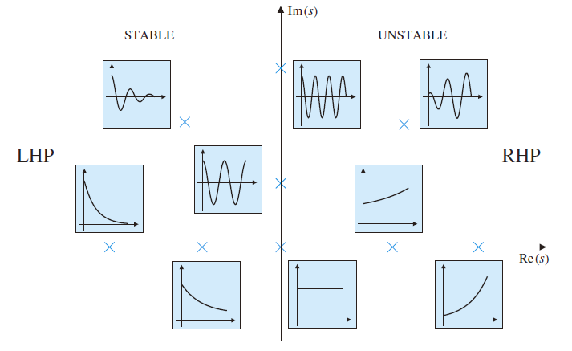

反馈控制系统学习笔记#3
LTI 系统的响应
有这么几种响应的类型：
脉冲响应（impulse response）
和系统的传递函数相关
阶跃响应（step response）
在实践中比较常见，与一些 LTI 系统中的物理参数有关
正弦响应（sinusoidal response）
和系统的频率响应相关
定义
A rational transfer function can be described either as a ratio of two polynomials in \(s\)
\[
H(s) = \frac{b(s)}{a(s)} = \frac{b_ms^m + b_{m-1}s^{m-1}+\cdots + b_1s + b_0}{a_ns^n + a_{n-1}s^{n-1}+\cdots + a_1s + a_0}
\]
or as a ratio in factored pole-zero form
\[
H(s) = K \frac{\prod_{i=1}^m (s - z_i)}{\prod_{i-1}^n (s - p_i)}
\]
- \(K = b_m / a_n\)
- the roots of the numerator, \(z_1, z_2, \ldots , z_m\) are called the finite zeros of the system
- the roots of the denominator, \(p_1, p_2, \ldots , p_n\) are called the finite poles of the system
- assuming the coefficients of \(a\) and \(b\) are real, complex poles or zeros come in complex conjugate pairs
Poles and zeros plots
Poles and zeros of a rational functions are often shown in a pole-zero plot: poles marked by “×”, zeros marked by “○”.
例子：
\[
F(s) = k \frac{(s+1.5)(s^2+2s+5)}{(s+2.5)(s-2)(s^2-2s+2)}
\]
脉冲响应
定义
一个 LTI 系统的脉冲响应是系统在输入信号\(u(t)\)为 unit impulse function 也就是\(\delta (t)\)且伴随 zero inital conditions 时的输出信号。
Suppose the transfer function representation of a LTI system is
\[
G(s) = \frac{Y(s)}{U(s)}
\]
Its impulse response is given by \(u(t) = \delta (t) \rightarrow U(s) = 1\). We then have
\[
Y(s) = G(s)
\]
Inverse LT gives
\[
y(t) = \mathcal{L}^{-1}\{ G(s) \} = g(t)
\]
First-order system
考虑一个 first-order system
\[
G(s) = \frac{1}{s + \sigma}
\]
使用拉普拉斯逆变换可得
\[
g(t) = e^{-\sigma t}
\]
可以发现当\(\sigma > 0\)时，随着\(t \rightarrow \infty\)，\(g(t) \rightarrow 0\)。那么脉冲响应是稳定（stable）的。
如果\(\sigma < 0\)，指数项随着时间增长，脉冲响应不稳定（unstable）。
\(\sigma\)越大，衰减到零的速度越快。
Second-order system
一个标准的 2nd order transfer function 可被表示为
\[
H(s) = \frac{K \omega_n^2}{s^2 + 2\zeta\omega_n s + \omega_n^2} = \frac{K\omega_n^2}{(s + \zeta\omega_n)^2 + \omega_n^2(1 - \zeta^2)}
\]
其中\(K\)是系统的 Gain。
A pair of complex poles, can be defined in terms of their real and imaginary parts, as follows:
\[
s = -\sigma \pm j\omega_d
\]
where
\[
\sigma = \zeta \omega_n \ \mbox{and}\ \omega_d = \omega_n \sqrt{1 - \zeta^2}
\]
\(\zeta\) is the damping ratio and \(\omega_n\) is the undamped natural frequency.
它的脉冲响应为
\[
y(t) = h(t) = \frac{K\omega_n}{\sqrt{1 - \zeta^2}}e^{-\sigma t}\sin (\omega_d t)
\]
脉冲响应和 s-plane 上 pole locations 的关系

- real, positive poles correspond to growing exponential terms
- real, negative poles correspond to decaying exponential terms
- a pole at \(s = 0\) corresponds to a constant term
- complex pole pairs with positive real part correspond to exponentially growing sinusoidal terms
- complex pole pairs with negative real part correspond to exponentially decaying sinusoidal terms
- pure imaginary pole pairs correspond to sinusoidal terms
- repeated poles yield same types of terms, multiplied by powers of \(t\)
阶跃响应
定义
The step response is the response of the system \(G(s)\) to a unit step input \(u(t) = t\).
因为\(U(s) = \frac{1}{s}\)，所以可得阶跃响应
\[
y(t) = \mathcal{L}^{-1}\left\{\frac{G(s)}{s}\right\}
\]
DC gain
Static/Steady-state/DC gain: this is the ratio of the output of a system to its input (presumed constant) after all transients have decayed.
If the magnitude of the step input is \(A\), i.e. \(u(t) = AU(t) \rightarrow U(s) = \frac{A}{s}\), we then have (via Final Value Theorem)
\[
\lim_{t \rightarrow \infty} y(t) = \lim_{s \rightarrow 0}sY(s) = \lim_{s \rightarrow 0}sG(s)\frac{A}{s} = AG(0)
\]
Hence, DC gain,
\[
K = \frac{\lim_{t \rightarrow \infty}y(t)}{\lim_{t \rightarrow \infty}u(t)} = \frac{AG(0)}{A} = G(0)
\]
Integrator
\[
y(t) = \int_0^t K_iu(\tau)\mathrm{d}\tau
\]
其中\(K_i\)是 integrator gain。
传递函数为
\[
G(s) = \frac{Y(s)}{U(s)} = \frac{K_i}{s}
\]
阶跃响应为
\[
Y(s) = G(s)U(s) = G(s)\frac{1}{s} = \frac{K_i}{s}
\]
通过拉普拉斯逆变换得
\[
y(t) = K_i t
\]
Differentiator
\[
y(t) = K_d \frac{\mathrm{d}u(t)}{\mathrm{d}t}
\]
其中\(K_d\)是 derivative gain。
传递函数为
\[
G(s) = \frac{Y(s)}{U(s)} = K_d s
\]
阶跃响应为
\[
Y(s) = G(s)U(s) = \frac{G(s)}{s} = K_d
\]
通过拉普拉斯逆变换得
\[
y(t) = K_d \delta (t)
\]
First-order systems
\[
\tau \frac{\mathrm{d}y(t)}{\mathrm{d}t} + y(t) = Ku(t)
\]
其中\(K\)是 steady-state/static gain 并且\(\tau\)是时间常数（time constant）。
传递函数为
\[
G(s) = \frac{Y(s)}{U(s)} = \frac{K}{\tau s + 1};\ y(0) = 0
\]
阶跃响应为
\[
Y(s) = G(s)U(s) = \frac{K}{\tau s + 1}\frac{1}{s} = \frac{K}{s} - \frac{K\tau}{\tau s + 1}
\]
通过拉普拉斯逆变换得
\[
y(t) = K - Ke^{-t/\tau}
\]
Second-order systems
\[
\frac{\mathrm{d}^2 y(t)}{\mathrm{d} t^2} + 2\zeta \omega_n \frac{\mathrm{d}y(t)}{\mathrm{d}t} + \omega_n^2y(t) = K\omega_n^2u(t)
\]
其中\(K\)，\(\zeta\)和\(\omega_n\)分别是 steady-state/static gain，damping ratio 和 undamped natural frequency。
传递函数为
\[
G(s) = \frac{Y(s)}{U(s)} = \frac{K\omega_n^2}{s^2 + 2\zeta\omega_n s + \omega_n^2},\ y(0) = y\prime (0) = 0
\]
阶跃响应为
\[
Y(s) = \ldots = \frac{K}{s} - \frac{K(s + \zeta\omega_n)}{(s + \zeta\omega_n)^2 + \omega_n^2(1-\zeta^2)} -\frac{K\zeta}{\sqrt{1-\zeta^2}}\frac{\omega_n\sqrt{1-\zeta^2}}{(s + \zeta\omega_n)^2 + \omega_n^2(1 - \zeta^2)}
\]
通过拉普拉斯逆变换得
\[
y(t) = \ldots = K\left(1 - \frac{e^{-\sigma t}}{\sqrt{1-\zeta^2}}\sin [\omega_d t + \phi]\right)
\]
\(|\mathcal{R}\{s\}| = \sigma = \zeta \omega_{n}\)决定 exponential envelope。
\(\mathcal{L}\{s\} = \omega_{d} = \omega_{n}\sqrt{1 - \zeta^2}\)决定 frequency of the sinusoidal signal。
阶跃响应和 s-plane 上 pole locations 的关系
- \(K\) determines the steady state output response to a step input.
- 3 types of responses possible: underdamped \(\zeta < 1\), overdamped \(\zeta > 1\) and critically damped \(\zeta = 1\).
- For underdamped response
- real part of pole (\(\sigma = \zeta \omega_n\)) determines how quickly the oscillations decay away
- imaginary part of pole (\(\omega_d = \omega_n\sqrt{1 - \zeta^2}\)) gives you the frequency of the oscillation
- For over- and critically damped systems, they behave more like first order systems, except more sluggish.
示例：https://lpsa.swarthmore.edu/SecondOrder/SOI.html
时域上的一些规范
在控制系统设计中，以下几个时域上的规范经常被用到：
- rise time, \(t_r\): the time it takes the system to reach the vicinity of its new set point
- settling time, \(t_s\): the time it takes the system transient to decay
- overshoot, \(M_p\): the maximum amount the system overshoots its final value divided by its final value
- peak time, \(t_p\): the time it takes the system to reach the maximum overshoot point
Rise time
最常见的定义为系统响应从10%到90%稳态值所需要的时间。
不太容易能得到准确的表达式。
对于一个标准的 2nd-order 传递函数，可得近似：
\[
t_r = \frac{2.16\zeta + 0.60}{\omega_n}\ \mbox{for}\ 0.3 \leq \zeta \leq 0.8
\]
取平均值\(\zeta = 0.55\)得
\[
t \approx \frac{1.8}{\omega_n}
\]
注意：仅适用无 zero 的 2nd-order system，其它系统会有较大误差。
对于给定的\(\zeta\)，越大的\(\omega_n\)会有更快的响应：
对于给定的\(\omega_n\)，更小的\(\zeta\)会让响应稍微加快：
Overshoot
\[
M_p = Ke^{-\pi \zeta / \sqrt{1 - \zeta^2}},\ 0\leq \zeta <1
\]
百分比形式：
\[
\%M_p = e^{-\pi\zeta / \sqrt{1 - \zeta^2}} \times 100\%
\]
Settling time
This is the time required for the transient to decay to a small value so that \(y(t)\) is almost in the steady-state.
Measure of smallness: 1%; 2% or 5% have been used.
Notice that the deviation of \(y\) from \(K\) is enclosed by the envelop of the exponential function
\[
K\left(1 \pm \frac{e^{-\zeta \omega_n t}}{\sqrt{1 - \zeta^2}}\right)
\]
那么计算2%的 settling time：
\[
\begin{align}
\frac{e^{-\zeta \omega_n t}}{\sqrt{1 - \zeta^2}} &= 0.02
\newline
e^{-\zeta\omega_n t} &\approx 0.02
\newline
\zeta \omega_n t_s &\approx 4
\newline
t_s &= \frac{4}{\zeta\omega_n} = \frac{4}{\sigma}
\end{align}
\]
Design Synthesis
Selection of pole and zero locations to meet these time-domain specifications for dynamic response.
稳定性
A linear time-invariant system is said to be stable if all the roots of the transfer function denominator polynomial have negative real-parts (i.e. all in the left half plane, \(\sigma < 0\)) and is unstable otherwise (\(\sigma > 0\)).
The real-part of the pole determine its stability; for a stable system, all poles must be in the LHP.
If the system has any poles in the RHP, it is unstable.
If the system has nonrepeated \(j\omega\)-axis poles, it is marginally stable.
 wechat
wechat alipay
alipay